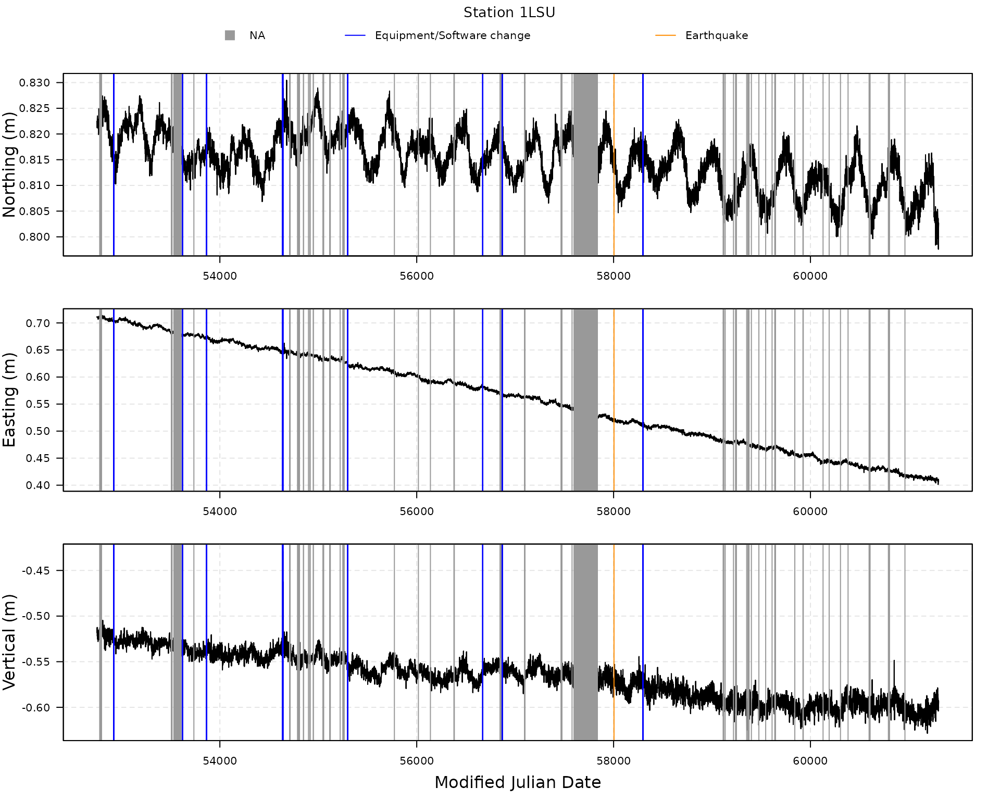
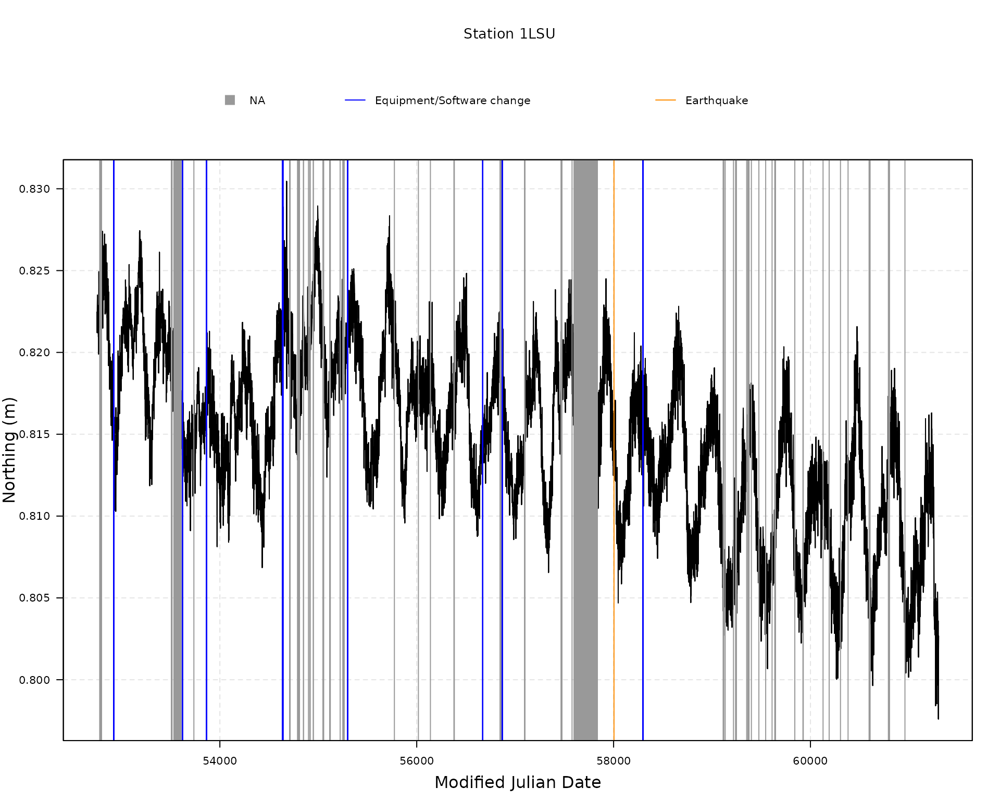
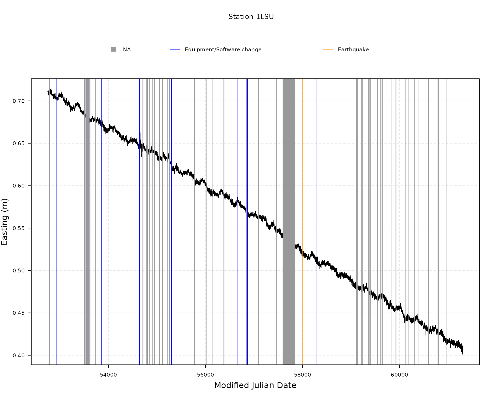
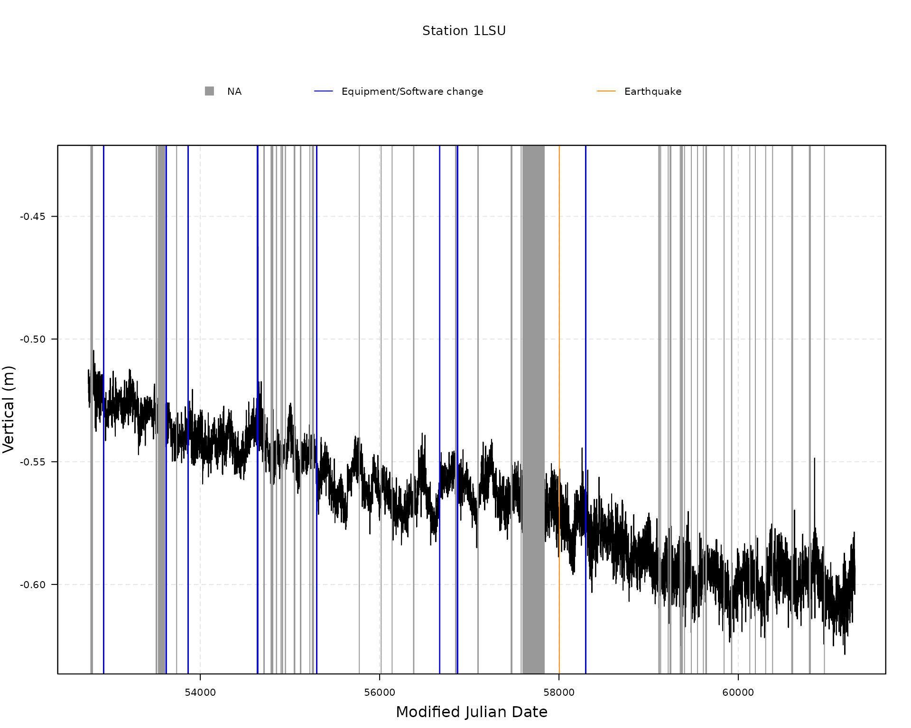

vignettes/load_plot_data_ngl.Rmd
load_plot_data_ngl.RmdFirst, load the gmwmx2 package.
all_stations <- download_all_stations_ngl()
head(all_stations)## station_name latitude longitude height
## <char> <num> <num> <num>
## 1: 00NA -12.46664 -229.1560 104.85105
## 2: 01NA -12.47822 -229.0180 105.40857
## 3: 02NA -12.35592 -229.1183 117.65247
## 4: 0ABI 68.35434 -341.1836 431.38847
## 5: 0ABN 65.03368 -338.6671 52.76211
## 6: 0ABY 58.65891 -343.8204 60.54753
data_CERN <- download_station_ngl("CERN")
attributes(data_CERN)## $names
## [1] "df_position" "df_equipment_software_changes"
## [3] "df_earthquakes"
##
## $class
## [1] "gnss_ts_ngl"
head(data_CERN$df_position)## station_name date decimal_year modified_julian_day gps_week
## <char> <char> <num> <int> <int>
## 1: CERN 11JAN09 2011.023 55570 1618
## 2: CERN 11JAN10 2011.025 55571 1618
## 3: CERN 11JAN11 2011.028 55572 1618
## 4: CERN 11JAN12 2011.031 55573 1618
## 5: CERN 11JAN13 2011.034 55574 1618
## 6: CERN 11JAN14 2011.036 55575 1618
## day_of_gps_week longitude_reference_meridian eastings_integer_portion
## <int> <num> <int>
## 1: 0 6.1 -3040
## 2: 1 6.1 -3040
## 3: 2 6.1 -3040
## 4: 3 6.1 -3040
## 5: 4 6.1 -3040
## 6: 5 6.1 -3040
## eastings_fractional_portion northings_integer_portion
## <num> <int>
## 1: -0.514880 5124647
## 2: -0.516516 5124647
## 3: -0.515332 5124647
## 4: -0.513767 5124647
## 5: -0.514585 5124647
## 6: -0.513555 5124647
## northings_fractional_portion vertical_integer_portion
## <num> <int>
## 1: 0.449870 525
## 2: 0.450337 525
## 3: 0.449564 525
## 4: 0.449247 525
## 5: 0.448877 525
## 6: 0.450695 525
## vertical_fractional_portion antenna_height east_sigma north_sigma
## <num> <num> <num> <num>
## 1: 0.932432 0 0.000709 0.000890
## 2: 0.926775 0 0.000719 0.000935
## 3: 0.936433 0 0.000738 0.000947
## 4: 0.930674 0 0.000706 0.000898
## 5: 0.932144 0 0.000707 0.000912
## 6: 0.930274 0 0.000716 0.000896
## vertical_sigma east_north_correlation east_vertical_correlation
## <num> <num> <num>
## 1: 0.002850 0.052565 0.013069
## 2: 0.002885 0.066901 -0.014813
## 3: 0.003010 0.018697 -0.000089
## 4: 0.002836 0.059289 -0.004831
## 5: 0.002871 0.061830 -0.000196
## 6: 0.002896 0.044424 -0.014705
## north_vertical_correlation nominal_station_latitude
## <num> <num>
## 1: -0.136312 46.25695
## 2: -0.128660 46.25695
## 3: -0.101435 46.25695
## 4: -0.132695 46.25695
## 5: -0.142020 46.25695
## 6: -0.131013 46.25695
## nominal_station_longitude nominal_station_height
## <num> <num>
## 1: -353.9394 525.9324
## 2: -353.9394 525.9268
## 3: -353.9394 525.9364
## 4: -353.9394 525.9307
## 5: -353.9394 525.9321
## 6: -353.9394 525.9303The interactive map uses the nominal station coordinates returned by
download_station_ngl() and OpenStreetMap tiles via the
optional leaflet package. No account or API key is needed.
The map background requires an internet connection when viewing the
vignette; attribution is shown on the map.
if (!is.data.frame(data_CERN$df_position) || nrow(data_CERN$df_position) == 0L) {
message("Skipping map: no position data were downloaded for CERN.")
} else if (!requireNamespace("leaflet", quietly = TRUE)) {
message("Install the optional 'leaflet' package to display the station map.")
} else {
latitude <- data_CERN$df_position$nominal_station_latitude
longitude <- data_CERN$df_position$nominal_station_longitude
valid <- which(is.finite(latitude) & abs(latitude) <= 90 &
is.finite(longitude))
if (length(valid) == 0L) {
message("Skipping map: no valid station coordinates are available for CERN.")
} else {
latitude <- latitude[valid[1L]]
longitude <- ((longitude[valid[1L]] + 180) %% 360) - 180
station_map <- leaflet::leaflet()
station_map <- leaflet::addTiles(station_map)
station_map <- leaflet::setView(station_map, lng = longitude,
lat = latitude, zoom = 12)
leaflet::addMarkers(station_map, lng = longitude, lat = latitude,
popup = "CERN GNSS station", label = "CERN")
}
}
head(data_CERN$df_equipment_software_changes)## Empty data.table (0 rows and 5 cols): station_name,date_YYMMDD,step_type_code,type_equipment_change,modified_julian_date
head(data_CERN$df_earthquakes)## Empty data.table (0 rows and 8 cols): station_name,date_YYMMDD,step_type_code,treshold_distance_km,distance_station_to_epicenter_km,event_magnitude...
if (is.data.frame(data_CERN$df_position) && nrow(data_CERN$df_position) > 0L) {
plot(data_CERN)
plot(data_CERN, component = "N")
plot(data_CERN, component = "E")
plot(data_CERN, component = "V")
} else {
message("Skipping plots: no position data were downloaded for CERN. Check the download warnings and try again later.")
}


